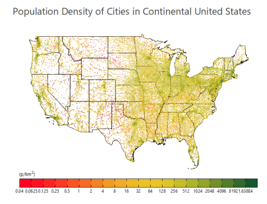
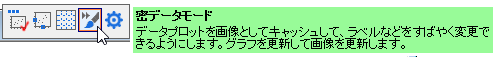

色付きドット
Color-Dots
- 
要求されるデータ
2つのY列または、2つのY列のデータ範囲を選択します。 関連付けられたX列がある場合はそれを使用し、そうでない場合は、Y列のサンプリング間隔または行番号が使用されます。
グラフ作成
- 2つのY列からデータを選択します。
- メニューからを選択します。
テンプレート
ColorDots.OTPU (Originのプログラムフォルダにインストールされています。)
ノート
このテンプレートを使用して多数の散布点をプロットします。ここでは、いくつかの強度因子の事前に計算された列があり、それを各散布点の色付けに使用します。このテンプレートは密度ドットテンプレートと異なり、密度ドットではオーバーレイされた点の数から強度係数を計算しています。
- デフォルトでスピードモードはオフになり、全てのデータ点がグラフ化されます。
- このグラフタイプでは高速なグラフ再描画のために、ビットマップキャッシングがオンになっています。キャッシングを使用すると、ウィンドウがサイズ変更または拡大されると、必要に応じて、準備されたビットマップのサイズが変更され、再配分されます。場合によっては、このビットマップはピクセル化または変形する可能性があり、これが受け入れられない場合、ページレベルのミニツールバーの密データモードボタンを2回クリックしてキャッシュをオフにすることができます（2回目のクリック後、チェックマークがなくなります）。
-
- .